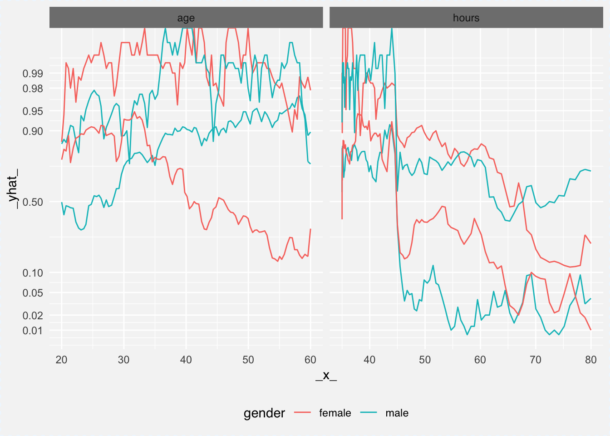

library("DALEX")
library("randomForest")
library("ceterisParibus")
set.seed(59)
model <- randomForest(status ~ gender + age + hours + evaluation + salary, data = HR)
pred1 <- function(m, x) predict(m, x, type = "prob")[,1]
explainer_rf_fired <- explain(model, data = HR[,1:5],
y = HR$status == "fired",
predict_function = pred1, label = "fired")
cp_rf_fired <- ceteris_paribus(explainer_rf_fired, HR[1:4,])
plot(cp_rf_fired, color = "gender",
selected_variables = c("age", "hours", "gender"),
alpha = 1, size = 0.5, show_observations = FALSE, as.gg = TRUE) +
scale_y_continuous(trans = "probit", breaks = c(0.01,0.02,0.05,0.1,0.5,0.9,0.95,0.98,0.99)) +
theme(legend.position = "bottom")